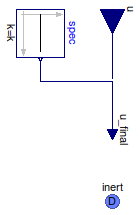

Table of Contents
- User's Guide
- Blocks
- Conditions
- Assemblies
- Regions
- Subregions
- Connectors
- Characteristics
- Units
- Quantities
- BaseClasses
Download
- Latest: FCSys-2.0.zip (**Please check back soon or contact kdavies4 at gmail.com.)

| Name | Description |
|---|---|
| Impose volume | |
| Impose pressure | |
| Base classes (not generally for direct use) |
 FCSys.Conditions.InertDalton.Pressure.Volume
FCSys.Conditions.InertDalton.Pressure.Volume
| Type | Name | Default | Description |
|---|---|---|---|
| Boolean | internal | true | Use internal specification |
| Constant | spec | redeclare Modelica.Blocks.So... | Internal specification |
| ConditionType | conditionType | BaseClasses.ConditionType.Vo... | Type of condition |
| Axes with linear momentum included | |||
| Boolean | inclLinX | true | X |
| Boolean | inclLinY | false | Y |
| Boolean | inclLinZ | false | Z |
| Type | Name | Description |
|---|---|---|
| InertDalton | inert | Connector for linear momentum and heat, with additivity of pressure |
model Volume "Impose volume" extends BaseClasses.PartialCondition(final conditionType=BaseClasses.ConditionType.Volume, u(final unit="l3")); equation inert.V = u_final;end Volume;
FCSys.Conditions.InertDalton.Pressure.Pressure
| Type | Name | Default | Description |
|---|---|---|---|
| Boolean | internal | true | Use internal specification |
| Constant | spec | redeclare Modelica.Blocks.So... | Internal specification |
| ConditionType | conditionType | BaseClasses.ConditionType.Pr... | Type of condition |
| Axes with linear momentum included | |||
| Boolean | inclLinX | true | X |
| Boolean | inclLinY | false | Y |
| Boolean | inclLinZ | false | Z |
| Type | Name | Description |
|---|---|---|
| InertDalton | inert | Connector for linear momentum and heat, with additivity of pressure |
model Pressure "Impose pressure" extends BaseClasses.PartialCondition(final conditionType=BaseClasses.ConditionType.Pressure, u(final unit="m/(l.T2)")); equation inert.p = u_final;end Pressure;